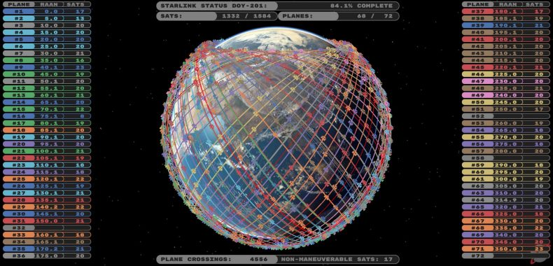
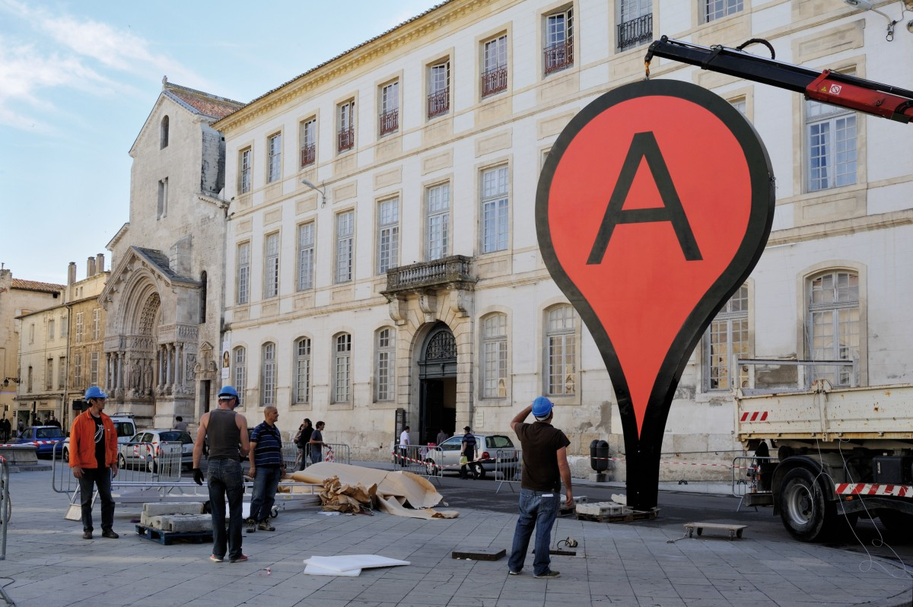
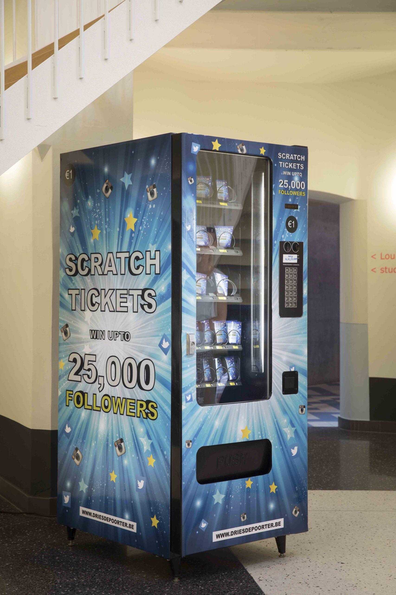

Le nuage ☁
Le numérique est souvent perçu à tort comme un médium immatériel.
La métaphore du "cloud" (nuage), abondamment utilisée pour évoquer internet, suggère quelque chose de vaporeux et d'intangible, mais également d'omniprésent  et hors d'atteinte. Derrière cette figure éthérée se cache cependant une réalité tangible, qu'il s'agisse des infrastructures bel et bien physiques utilisées par le réseau, ou ses impacts sur le monde dit "réel".
Dans le cadre de cette recherche, vous allez explorer cette tension qui existe entre numérique dit "immatériel", et une forme de matérialité. Réfléchissez à ce que leur rencontre ou leur opposition révèle, sur le numérique comme sur notre réalité.
Ainsi, Red Lines d'Evan Roth est une oeuvre en ligne qui évoque les imposants câbles de télécommunication sous-marins reliant les continents entre eux, qui font d'internet un réseau mondial. L’œuvre nous rappelle non seulement la physicalité du réseau, mais connecte également cette infrastructure moderne à l'histoire de l'empire colonial britannique  (voir aussi Ingrid Burrington & Tabita Rezaire)
(voir aussi Ingrid Burrington & Tabita Rezaire)
Map d'Aram Barthol transpose dans la réalité un symbole bien connu de Google Map, sous forme d'une sculpture monumentale, révélant ainsi la superposition de ces deux mondes.
D'autres artistes comme Jan Robert Leegte  ou Zach Blas rendent également tangibles des symboles issues du numérique.
ou Zach Blas rendent également tangibles des symboles issues du numérique.
Avec Get Popular Vending Machine de Dries Deporter,  le monde numérique fait également irruption dans le notre, via un distributeur de followers.
Alerting Infrastructure de Jonah Brucker-Cohen provoque la destruction physique d'un mur, à chaque visite du site de l'institution où l’œuvre est exposée.